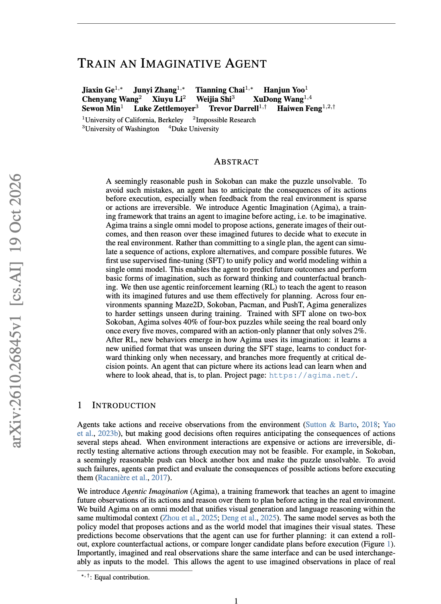
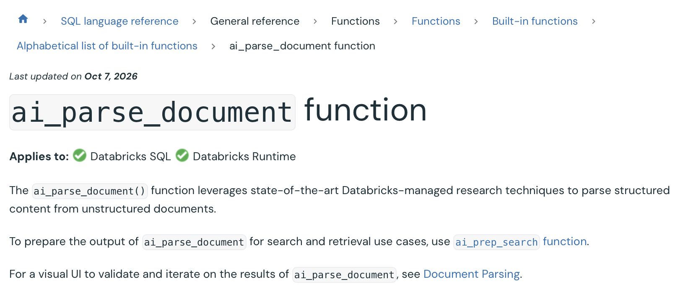
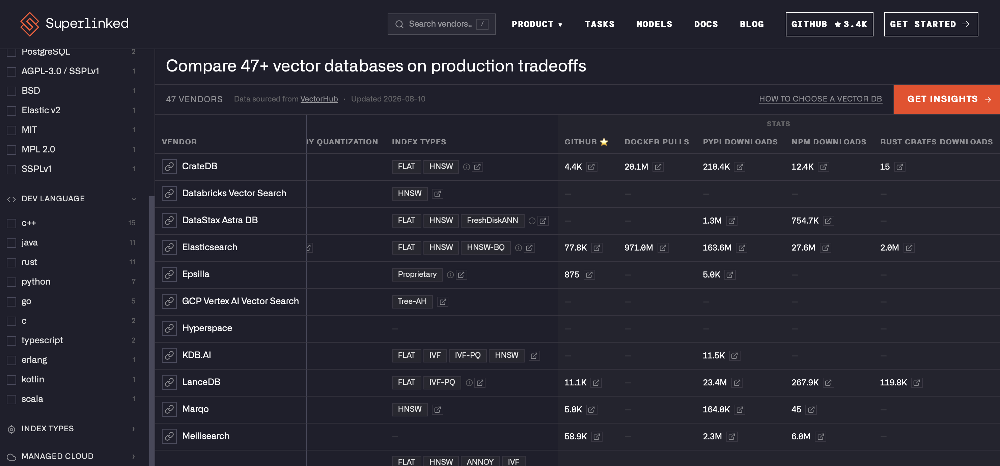

Context engineering
What goes into an agent’s context window.
LECTURE 2
21 October 2026
16:00–18:00 CET

Welcome to Lecture 2. We move from models to the information we deliberately supply to an application at inference time.
LECTURE 2
What goes into an agent’s context window.
The arXiv curator retrieval flow.
PDF parsing with ai_parse_document.
Prepare information for retrieval.
Lakebase pgvector vs AI Search.
Set expectations: the practical work is split across notebooks 2.1 to 2.4.
CONTEXT ENGINEERING
System prompt, task rules, examples
Question, intent, constraints
Relevant documents and paper chunks
Tool definitions and observations
Recent messages and summaries
Durable facts and task progress
Select and order these components for each model call.
Today we focus on retrieved knowledge. Lecture 3 extends this to tools, memory, and state.
CONTEXT ENGINEERING
Context for one call
Available token budget
Available information
Select
Order
Compact
Context for this call
Finite token budget
or
Tool call↓Tool resultNew results and messages enter history. Curate again for the next call.
Adapted from Anthropic: Effective context engineering for AI agents
Prompt engineering improves the instructions for a call. Context engineering curates the full input on every iteration: instructions, documents, tools, memory, user input, and message history. The available pool is larger than the selected context. A model can return a response or request a tool. Tool results join history and become candidates for the next call. The dashed boundaries represent limited context windows, not external storage.
Source: Anthropic, Effective context engineering for AI agents, September 29, 2025.
CONTEXT ENGINEERING
Explain that excess context can increase cost and distract the model. The work is curation.
AGENT ENGINEERING
| Layer | Core question | Components |
|---|---|---|
| Context | What does the model see on this call? | Retrieval, history pruning, memory, file snippets, state summaries |
| Harness | How does a run execute safely and reliably? | Sandbox, tool / MCP execution, hooks, guardrails, human approvals |
| Loop | How does the system repeat, correct itself, and stop? | Reason and act, verification, retries, exit conditions, persistent state |
Conceptual distinctions based on the supplied comparison. These concerns overlap: the harness implements the loop and assembles context for each model call.
REFERENCE ARCHITECTURE
Scheduled job discovers new arXiv papers
PDFs in a
UC volume
ai_parse_document
Structured content
Chunks + metadata
in Delta
Embeddings +
searchable content
2 vector search options
Managed vector search index
PostgreSQL + pgvector
Both options serve retrieval for RAG. Track processed papers and stable chunk IDs to make repeat runs idempotent.
DATA INGESTION

DATA INGESTION

POST /api/2.0/ai-functions/ai-parse-documentPass a document path in a Unity Catalog volume.
Databricks Document Parsing: SQL, UI, REST API. Screenshot supplied by the user.
AI FUNCTIONS
ai_analyze_sentimentIdentify sentiment in textai_classifyAssign your chosen text labelsai_decideEvaluate questions using criteria or scoresai_detect_anomaliesFind unusual time-series valuesai_enrichGenerate fields, optionally using sourcesai_extractExtract fields using a schemaai_fix_grammarCorrect grammar in textai_forecastPredict future time-series valuesai_genGenerate a response to a promptai_generate_textGenerate text (deprecated: use ai_query)ai_maskMask specified entities in textai_parse_documentExtract structured document contentai_predict_classLearn from rows to predict missing classesai_predict_valueLearn from rows to predict missing valuesai_prep_searchPrepare contextual chunks for retrievalai_queryCall a Model Serving endpointai_searchSearch knowledge sources and ground answersai_similarityScore semantic similarity of two stringsai_summarizeSummarize textai_top_driversFind contributors to a metric changeai_transcribeTranscribe audio with speaker segmentsai_translateTranslate text to a target languageAvailability, preview status, and compute requirements vary by function.
Function reference links: ai_analyze_sentiment ai_classify ai_decide ai_detect_anomalies ai_enrich ai_extract ai_fix_grammar ai_forecast ai_gen ai_generate_text ai_mask ai_parse_document ai_predict_class ai_predict_value ai_prep_search ai_query ai_search ai_similarity ai_summarize ai_top_drivers ai_transcribe ai_translate
AI FUNCTIONS
Directional estimates per 1,000 pages in US East
| Page complexity | Representative documents | SRTI DBUs | Price / 1k pages |
|---|---|---|---|
| Low: simple text | Legal contracts, memos | 10–15 | $0.70–$1.05 |
| Low: sparse tables or images | Invoices, ID and verification documents | 20–25 | $1.40–$1.75 |
| Medium: complex tables, figures, captions | Company 10-Ks, bank statements | 60–65 | $4.20–$4.55 |
| High: dense forms or complex diagrams | Engineering diagrams, insurance claims, W-2s, 1040s | 85–90 | $5.95–$6.30 |
Estimates depend on page count, size, and complexity. Use your workload’s mix of pages.
Source: Databricks AI Functions pricing, checked 20 October 2026.
Values reproduced from the user-provided table and verified against the linked Databricks pricing page. These are directional parsing estimates, not a quote for a complete RAG pipeline.
DATA INGESTION

ai_prep_search BetaOpinionated semantic chunking with document context. Produces text ready for embedding.
This example stores a JSON string. Parse it, extract elements, then apply your own cleanup and chunking.
The parsed_content column in this example is a JSON string. Parse it before extracting document elements.
ai_prep_search documentation. The user confirmed that parsed_content in this example is a STRING, as indicated by the ABC column icon. Deserialize the JSON with parse_json / from_json before extracting elements or passing structured document content to ai_prep_search. ai_parse_document reference.
Now that content is structured and stored, we decide the units that will be retrieved.
EMBEDDINGS
Embeddings represent text as numerical vectors.
Similar meanings produce similar vectors.
MLOps is awesome
→ [0.1, −0.3, 0.5, …]
Illustrative vector
| Example model | Dimensions | Token window |
|---|---|---|
| databricks-gte-large-en | 1,024 | 8,192 |
| databricks-bge-large-en | 1,024 | 512 |
| text-embedding-3-small | 1,536 | 8,192 |
| text-embedding-3-large | 3,072 | 8,192 |
ANN: approximate nearest neighbors.
HNSW: Hierarchical Navigable Small World.
A layered graph that finds nearby vectors quickly, trading some recall for speed.
Possible pieces: [ML] [Ops] [ is] [ awesome]. The exact split and count depend on the tokenizer. Tokens can be words, word pieces, or punctuation.
The token pieces and vector are illustrative, not a measured tokenizer or embedding output. Use the selected embedding model’s tokenizer for actual counts. Databricks model reference: https://docs.databricks.com/aws/en/machine-learning/foundation-model-apis/supported-models . OpenAI models use the default dimensions shown here and support reducing dimensions with the dimensions parameter. Source: https://developers.openai.com/api/docs/guides/embeddings . HNSW uses a multilayer graph for approximate nearest-neighbor search: https://github.com/pgvector/pgvector#hnsw .
CHUNKING
Predictable token counts. Overlap helps preserve context at boundaries.
Smaller: precise retrieval, less context. Larger: more context, more noise and tokens.
Preserves readable units. Length varies, so split units that exceed the token limit.
Uses topics, headings, and document elements. Check boundaries and enforce a maximum size.
databricks-bge-large-en: 1,024 dimensions, 512-token window.
Maximum chunk size: 512 tokens. Reserve space for any added title, metadata, or special tokens.
BGE limit: https://docs.databricks.com/aws/en/machine-learning/foundation-model-apis/supported-models . The entire embedding input must fit, including text enrichment or tokenizer-specific overhead. Validate actual token counts before embedding, rather than relying on character-count heuristics.
CHUNKING
Illustrative shape, not course measurements
Tokens per embedding input
BGE limit: 512 tokens
Investigate oversized chunks and very short fragments.
Report min, median, p95, max, and count over the limit.
Inspect random chunks, the shortest and longest, and samples from different papers.
Look for broken sentences, split tables, missing headings, OCR errors, and repeated headers.
Flag empty text and duplicates. Verify chunk IDs, paper IDs, page numbers, and source links.
Read neighboring chunks together. Verify overlap and whether each chunk is understandable on its own.
The histogram is an explicitly illustrative diagram, not a reconstruction of unavailable source data. Use the exact embedding tokenizer on the full input to produce the real distribution. A distribution detects size issues but cannot establish semantic quality, so pair it with content sampling and integrity checks.
We now have clean chunks and embeddings. The next question is where to store and retrieve them.
VECTOR SEARCH

VECTOR SEARCH
| Feature | Lakebase + pgvector | Databricks AI Search |
|---|---|---|
| Open source | Yes, pgvector extension | ✗ |
| License | PostgreSQL license | Proprietary |
| Filters | SQL WHERE and relational joins | Index metadata filters |
| Hybrid search | Combine vector + text ranking in SQL | Built-in vector + BM25 rank fusion |
| Full-text search | PostgreSQL full-text search | Supported; standalone query is Beta |
| BM25 | Additional extension or implementation | Built-in |
Lakebase hosts pgvector. PostgreSQL capabilities and additional extensions complement the vector extension.
VECTOR SEARCH
| Feature | Lakebase + pgvector | Databricks AI Search |
|---|---|---|
| Facets | SQL aggregation | ✗ |
| Geo search | PostGIS extension | ✗ |
| Multi-vector | Multiple columns / indexes; custom scoring | ✗ |
| Sparse vectors | sparsevec + HNSW | ✗ |
| Vector dimensions | ANN: vector 2,000; halfvec 4,000 | 4,096 per index |
| Index types | Exact scan, HNSW, IVFFlat | HNSW |
✗ No native support in the referenced comparison. Dimension limits shown apply to ANN indexes.
ADOPTION
Reported using pgvector for agent memory or data management in the 2025 Stack Overflow survey.
3,398 responses to this question. ChromaDB: 20%; Redis: 43%.
Stack Overflow Developer Survey 2025Datadog identifies pgvector as the fastest-growing non-bundled Postgres extension.
December 2025 to May 2026, within Datadog’s observed production databases.
Datadog State of Postgres 2026Strong adoption and growth support “a leading choice.” These samples do not establish overall market leadership or performance superiority.
LAKEBASE EXTENSIONS
| Capability | Supported extensions | What they add |
|---|---|---|
| Vector search | vector (pgvector) | HNSW and IVFFlat indexes |
| Geospatial | postgis, pgrouting | Spatial queries and route planning |
| Text matching | pg_trgm, fuzzystrmatch, unaccent | Similarity, fuzzy matching and normalization |
| Data structures | hstore, ltree, citext | Key-value, hierarchy and case-insensitive text |
| Application APIs | pg_graphql, pg_jsonschema | GraphQL and JSON validation |
| Diagnostics | pg_stat_statements, pgstattuple | Query and storage statistics |
| Security & IDs | pgcrypto, uuid-ossp | Cryptographic functions and UUIDs |
Selected extensions from the official list. Versions depend on PostgreSQL version. Enable pgvector with CREATE EXTENSION IF NOT EXISTS vector;
TWO OPTIONS
The preparation is the same: turn PDFs into rows of searchable text.
AI Search generates embeddings from the text column and maintains a search index.
Query with ai_search()Generate embeddings, sync the table to Lakebase, and build a vector index there.
Query with ai_search() or PostgresWe recommend Lakebase for workloads with idle periods. Its compute can scale to zero when enabled; storage remains billable.
ai_search() and both knowledge sources · Lakebase scale to zero
FROM PDF TO SEARCH
PDFs in a volume → parsed rows
| Column | Type |
|---|---|
| path | STRING |
| parsed_content | STRING |
| processed | BIGINT |
Table of document chunks (Delta)
| Column | Type |
|---|---|
| arxiv_id | STRING |
| chunk_id | STRING |
| text | STRING |
| id | STRING |
| title | STRING |
| summary | STRING |
| authors | STRING |
| year | INT |
| month | INT |
| day | INT |
| embedding* | ARRAY<FLOAT> |
Select text + an embedding model. Databricks embeds chunks and text queries; optionally saves generated vectors.
Generate vectors first. Select the embedding column and dimension. Embed queries using the same model.
Both: managed SDP sync into the index.
*The embedding column is required for bring-your-own vectors. Choose Triggered or Continuous sync where supported.
Schema follows the supplied diagram. id is the unique chunk row key; text is the chunk body; arxiv_id identifies the source paper. The metadata columns allow returned chunks to retain their source context. Lakebase Search requires its own extensions and index, separate from the direct pgvector HNSW course implementation.
AI SEARCH
Databricks: options for providing vector embeddings · Both options support metadata filters.
FROM PDF TO SEARCH
PDFs in a volume → parsed rows
| Column | Type |
|---|---|
| path | STRING |
| parsed_content | STRING |
| processed | BIGINT |
Table of document chunks (Delta)
| Column | Type |
|---|---|
| arxiv_id | STRING |
| chunk_id | STRING |
| text | STRING |
| id | STRING |
| title | STRING |
| summary | STRING |
| authors | STRING |
| year | INT |
| month | INT |
| day | INT |
| embedding | ARRAY<FLOAT> |
A managed SDP pipeline syncs text, metadata and embeddings into Lakebase.
vector(n)lakebase_ann indexSync: Triggered or Continuous. Use the same embedding model and dimensions for chunks and queries.
Databricks: ai_search() source configuration (Beta)
Schema follows the supplied diagram. id is the unique chunk row key; text is the chunk body; arxiv_id identifies the source paper. The metadata columns allow returned chunks to retain their source context. Lakebase Search requires its own extensions and index, separate from the direct pgvector HNSW course implementation.
KEEP SEARCH DATA FRESH
Spark Declarative Pipelines on Lakeflow (SDP, previously DLT).
Both options use managed SDP pipelines to sync the chunk table to the AI Search index or Lakebase synced table.
| Question | Triggered | Continuous |
|---|---|---|
| When does it stop? | Finishes the update, then stops | Keeps running until stopped |
| What does it process? | Data available at the start of each run | New source data as it arrives |
| Typical freshness needs | Every 10 minutes, hourly or daily | About 10 seconds to a few minutes |
| Cost / freshness tradeoff | Compute for each run; changes wait for the next trigger | Ongoing compute for lower update lag |
Lakebase: choose On-demand → Triggered, or Continuous. Triggered and Continuous require change data feed.
AI Search: standard Delta Sync supports both; storage-optimized endpoints use Triggered.
General SDP guidance: choose the mode based on freshness needs and compute cost. The ranges above are guidelines, not latency guarantees.
SDP mode selection guidelines · Spark Declarative Pipelines on Lakeflow · Lakebase sync · AI Search sync
Lakebase also offers Snapshot mode, which replaces the full dataset on each refresh. Triggered incremental sync is distinct from Snapshot. AI Search pipeline provenance: https://docs.databricks.com/api/vector-search/v1/get-vector-index exposes the sync pipeline ID and links its status to the former DLT pipeline UI. Sync compute and serving compute have separate lifecycles: stopping a sync does not itself stop the search endpoint or database. Continuous writes can prevent Lakebase from becoming idle. For user-managed Lakeflow pipelines, current docs recommend continuous job orchestration for continuous execution.
RETRIEVAL
query_type="ANN"
query_type="HYBRID"
RETRIEVAL
Hybrid retrieval with an explicit filter and source fields.
# Standard endpoint, Databricks-managed embeddings
results = index.similarity_search(
query_text="FlashAttention memory-efficient attention",
query_type="HYBRID",
columns=["id", "title", "text", "year"],
filters={"year": 2024},
num_results=5,
)Use ANN for semantic-only retrieval; FULL_TEXT for keyword-only search (Beta).
For hybrid search, pass query_vector plus query_text. Use the same embedding model as the index.
Storage-optimized endpoint: use filters="year = 2024". index is an existing AI Search index.
RETRIEVAL
First establish an evaluation set, quality metrics and a latency budget.
Combine meaning with exact terms.
Constrain retrieval to the intended subset.
Improve ordering; measure latency and throughput.
Refine parsing, chunking and metadata.
Expand or reformulate unclear queries.
Tune extraction and query-rewriting prompts.
Let agents retry, refine or skip search.
Last resort after diagnosing a model gap.
Reranking trades latency for relevance. Test capacity for high-QPS applications.
RETRIEVAL
Use structured constraints to narrow the candidate set before ranking.
Limit publication year or time range
Select departments, collections or teams
Separate papers, code and documentation
Apply trusted permission constraints
Choose the corpus language
Restrict topics or document tags
year = 2024; use “transformers” as the hybrid search query.Index the required metadata. Enforce access rules in trusted code; a user-supplied filter is not authorization.
RETRIEVAL-AUGMENTED GENERATION
“What are recent memory-efficient attention methods?”
Use the document embedding model; managed embeddings handle this step.
Combine vector similarity, keywords and metadata filters; optionally rerank.
Select useful chunks, remove duplicates, and retain titles and source IDs.
Provide question + evidence to the LLM; request citations and acknowledge missing evidence.
CONTEXT QUALITY
Context quality is the central design objective. Retrieval top-k is only an initial candidate set.
HOMEWORK
Homework is about making retrieval observable. Students should be able to explain what is indexed and why a result was returned.
Next lecture on MCP & tool calling
& agent architecture